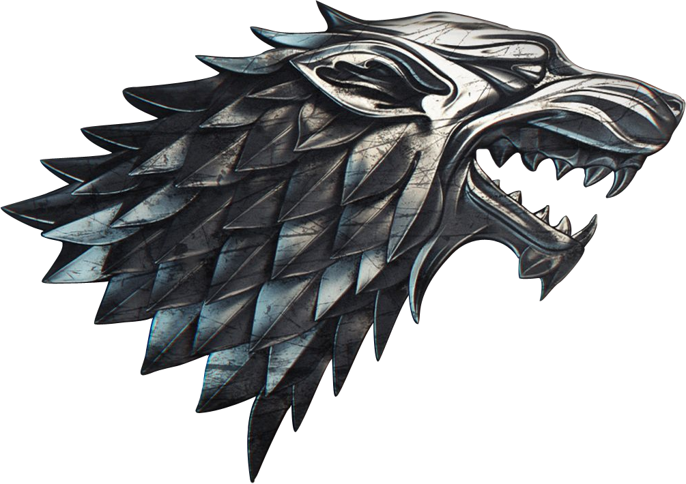
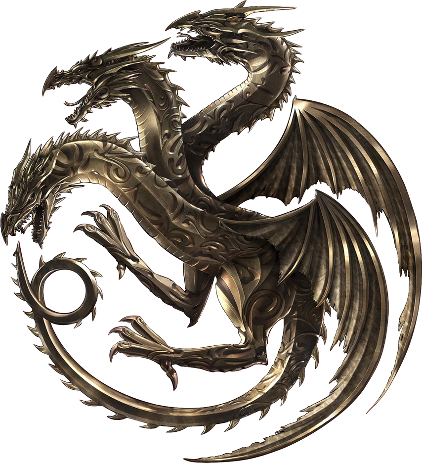
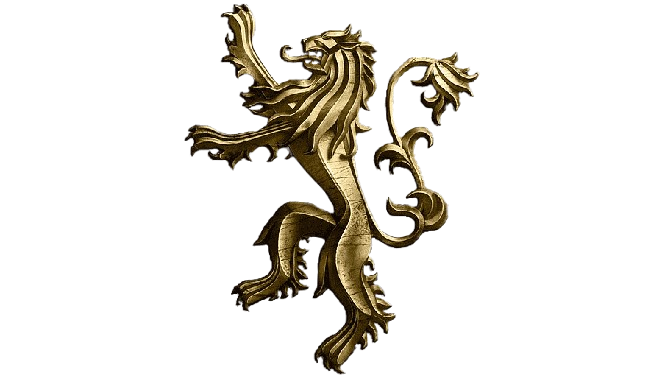
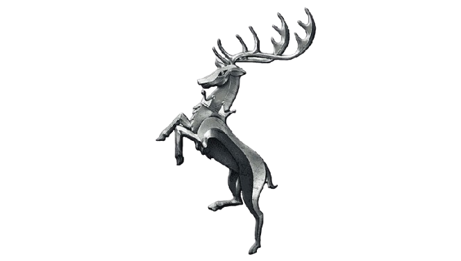
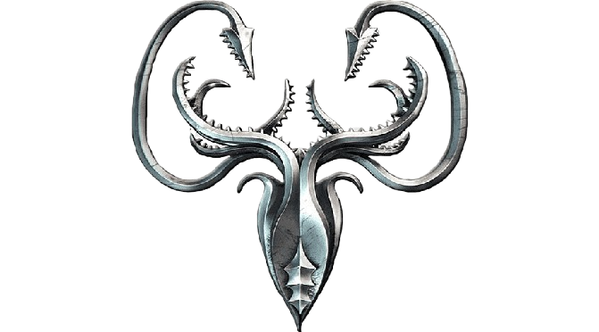

Westeros Arşivleri

Westeros Haneleri

Stark Hanesi
Kuzey'in Koruyucuları. İlk İnsanlar'ın soyundan gelirler ve binlerce yıl Kışyarı'ndan (Winterfell) Kuzey'i yönettiler. Onurları ve adalete olan bağlılıklarıyla bilinirler.

Targaryen Hanesi
Valyria kanı taşıyan ejderha efendileri. Fatih Aegon önderliğinde Yedi Krallık'ı birleştirip üç yüz yıl boyunca Demir Taht'ta oturdular.

Lannister Hanesi
Batı'nın Muhafızları. Altın madenleri sayesinde Westeros'un en zengin ve en güçlü hanesidir. Casterly Kayası'ndan hüküm sürerler.

Baratheon Hanesi
Fırtına Toprakları'nın yöneticileri. Robert'ın İsyanı ile Demir Taht'ı Targaryenlerden almışlardır. Siyah saçları ve öfkeli yapılarıyla tanınırlar.

Greyjoy Hanesi
Demir Adalar'ın denizci ve yağmacı halkı. Eski Yola inanırlar ve geçimlerini toprağı işleyerek değil, denizden alarak sağlarlar.
Martell Hanesi
Dorne'un yöneticileri. Westeros'un geri kalanından farklı kültürleri ve zehir kullanımındaki ustalıklarıyla bilinirler. Targaryen fetihlerine en uzun süre direnen hanedir.
Tarihi Olaylar
Valyria Kıyameti
Dünyanın en büyük imparatorluğu olan Valyria Özgür Halkı, bilinmeyen volkanik ve büyüsel bir felaketle tek bir gecede yok oldu. Ejderhaların çoğu öldü, sadece Targaryenler Ejderhakayası'na kaçarak kurtuldu.
Aegon'un Fethi
Fatih Aegon ve kız kardeşleri Visenya ile Rhaenys, üç devasa ejderhayla Westeros'u işgal etti. Yedi Krallık'ın altısı dize getirildi, düşmanların kılıçları Balerion'un ateşiyle eritilerek Demir Taht dövüldü.
Ejderhaların Dansı
Targaryen Hanesi'ni ikiye bölen en büyük ve en kanlı iç savaş. Gökyüzünde ejderhalar çarpıştı ve savaşın sonunda hanedan zayıflarken ejderhalar neredeyse nesli tükenme noktasına geldi.
Dorne'un Fethi
"Genç Ejderha" Kral Daeron I, Fatih Aegon'un bile dize getiremediği Dorne'u devasa bir orduyla işgal etti. Zafer kazanılmış gibi görünse de Dorne direnişi hiç bitmedi. Çıkan isyanlarda on binlerce asker ve bizzat Kral Daeron'un kendisi hayatını kaybetti. Dorne, krallığa kılıçla değil, yıllar sonra evlilikle katıldı.
Birinci Blackfyre İsyanı
Kral Aegon IV'ün ölüm döşeğinde tüm piçlerini meşrulaştırması krallığı ikiye böldü. Fatih Aegon'un Valyria çeliği kılıcını taşıyan Daemon Blackfyre, meşru varis Daeron II'ye karşı isyan bayrağını çekti. Kızıl Çimen Savaşı'nda Daemon'un ölümüyle isyan bastırılsa da, Blackfyre soyunun tehdidi nesiller boyu sürdü.
Dokuz Metelik Krallarının Savaşı
Blackfyre soyunun Demir Taht'ı ele geçirmek için yaptığı son büyük girişim. Canavar Maelys (Maelys the Monstrous) önderliğindeki paralı asker ittifakı Basamaktaşı Adaları'nı ele geçirdi. Genç şövalye Barristan Selmy'nin Maelys'i teke tek dövüşte öldürmesiyle Blackfyre erkek soyu sonsuza dek tükendi.
Harrenhal Turnuvası (Yalancı Bahar)
Westeros tarihinin en görkemli turnuvası, aynı zamanda krallığın sonunu getiren kıvılcım oldu. Prens Rhaegar Targaryen turnuvayı kazandıktan sonra, kendi karısı Elia Martell'i es geçerek Eddard Stark'ın kız kardeşi (ve Robert Baratheon'un nişanlısı) Lyanna Stark'ın kucağına kış güllerinden taç bıraktı.
Robert'ın İsyanı
Deli Kral Aerys II Targaryen'e karşı başlatılan büyük isyan. Prens Rhaegar'ın Üç Dişli Mızrak'ta düşmesi ve Kral Toprakları'nın yağmalanmasıyla 300 yıllık Targaryen hanedanlığı kanlı bir şekilde son buldu.
Greyjoy İsyanı
Balon Greyjoy, Demir Taht'a başkaldırarak kendini Demir Adalar'ın Kralı ilan etti. Ancak Kral Robert Baratheon ve Lord Eddard Stark önderliğindeki ordular, Pyke Kuşatması ile isyanı kanlı bir şekilde bastırdı.
Beş Kralın Çarpışması
Kral Robert'ın şüpheli ölümü ve ardından Lord Eddard Stark'ın ihanet suçlamasıyla idam edilmesi Yedi Krallık'ı kaosa sürükledi. Joffrey, Stannis, Renly, Robb Stark ve Balon Greyjoy aynı anda krallık iddia ederek kıtayı ateşe verdi.
Karasu Savaşı
Stannis Baratheon'un Kral Toprakları'na karadan ve denizden yaptığı devasa kuşatma. Kral Eli Tyrion Lannister'ın stratejik zekası ve devasa bir çılgınateş (wildfire) patlaması sayesinde şehir düşmekten son anda kurtarıldı.
Kızıl Düğün
Westeros tarihinin en karanlık ihaneti. Lord Walder Frey ve Roose Bolton'un Lannisterlar ile gizlice anlaşıp, misafir haklarını hiçe sayarak Kral Robb Stark'ı, annesi Catelyn'i ve tüm Kuzey ordusunu katletmesi.
Mor Düğün & Tywin'in Düşüşü
Kral Joffrey Baratheon, Margaery Tyrell ile kendi düğününde zehirlenerek öldürüldü. Cinayetle suçlanan Tyrion Lannister, babası Tywin'i bir arbaletle vurarak Kral Toprakları'ndan Essos'a kaçtı.
Kara Kale Savaşı
Mance Rayder önderliğindeki devasa Yabanıl ordusunun Gece Nöbeti'ne saldırısı. Jon Snow'un liderliğindeki savunma ve Stannis Baratheon'un süvarileriyle son anda yetişmesi sayesinde Duvar düşmekten son anda kurtarıldı.
Kefaret Yürüyüşü
İnanç'ın (Faith of the Seven) silahlanıp güçlenmesiyle Kraliçe Cersei Lannister tutuklandı. Suçlarını itiraf etmek zorunda bırakılan Cersei, Baelor Septi'nden Kızıl Kale'ye kadar halkın aşağılamaları eşliğinde çırılçıplak yürütüldü.
Kışın Ayak Sesleri
Kuzey'de Jon Snow, Yabanılları Duvar'dan geçirdiği için kendi nöbetçi kardeşleri tarafından "Nöbet İçin" denilerek hançerlendi. Essos'ta ise Daenerys Targaryen, isyancılardan kurtulmak için ejderhası Drogon'un sırtında Dothraki Denizi'ne uçtu. Ve Kış tamamen geldi...